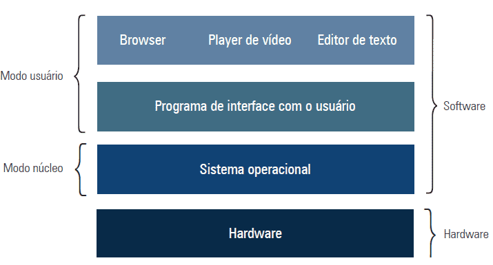
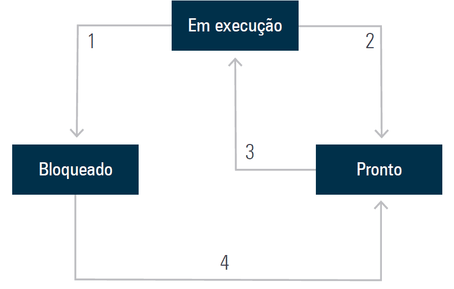
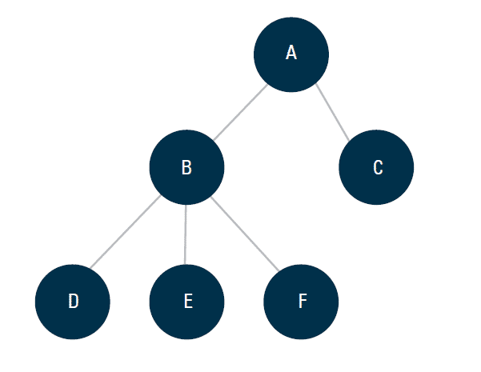
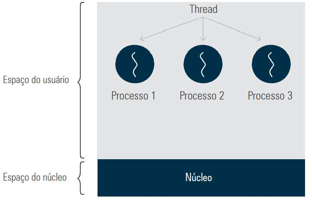
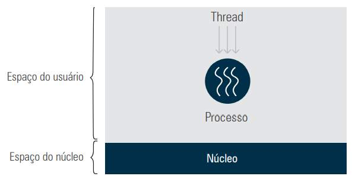

Este capítulo aborda a arquitetura de computadores sob a perspectiva do software, explicando como a camada de software “dá vida” ao hardware. Enquanto o hardware compreende os componentes físicos (CPU, memória, dispositivos de E/S etc.), o software, em especial o sistema operacional (SO), abstrai os detalhes complexos do hardware e gerencia seus recursos, tornando a utilização do computador mais simples e eficiente para o usuário.
1. Infraestrutura de Software
Um sistema de computação é composto por hardware e software. O software existe para que o hardware execute as funções determinadas pelo usuário, fazendo a abstração dos detalhes técnicos. Dessa forma, o sistema operacional é a peça central que:
Oculta os detalhes de hardware do usuário;
Fornece uma interface gráfica (GUI) ou por linha de comando (shell),
ocultando detalhes como interrupções, organização do disco rígido e demais aspectos técnicos;
Gerencia os recursos de memória, processamento e armazenamento.
Os principais componentes de um sistema operacional de baixo para cima:
Hardware (base do sistema);
Sistema Operacional;
Utilitários;
Programas de Aplicação.
A figura abaixo mostra a organização dos componentes, destacando a separação entre o modo núcleo (ou supervisor), onde o SO tem acesso completo ao hardware, e o modo usuário, onde apenas um subconjunto de instruções é permitido. Essa separação garante que operações sensíveis, como acessos a dispositivos de E/S, sejam executadas com segurança.

Organização dos principais componentes de um computador ↑ Fonte: adaptado de Tanenbaum e Bos (2016, p. 15).
Multiplexação de Recursos
Para gerenciar eficientemente os recursos do hardware, o sistema operacional utiliza dois tipos de multiplexação:
Multiplexação no tempo:Diferentes programas ou usuários se revezam no uso de um recurso. Exemplo: uma única CPU compartilhada entre vários programas, onde cada um tem sua vez de execução.
Multiplexação no espaço:Cada programa recebe uma parte do recurso, como a divisão da memória entre vários programas para evitar desperdício, ou o compartilhamento do disco entre diversos usuários.
2. Tipos de Sistemas Operacionais
O capítulo apresenta a diversidade de sistemas operacionais, classificados conforme o tipo de hardware e as necessidades dos usuários:
2.1. Sistemas operacionais de computadores de grande porte:
Usados em mainframes e servidores de alta capacidade, com enormes recursos de E/S.
Suportam serviços como:
Processamento em lote (batch): Tarefas executadas sem interação direta do usuário;
Processamento de transações: Lida com milhares de pequenos pedidos por segundo;
Tempo compartilhado (timesharing): Permite que múltiplos usuários acessem o sistema simultaneamente.
2.2. Sistemas operacionais de servidores:
Projetados para atender múltiplos usuários em rede, fornecendo serviços de impressão, arquivo e web.
Exemplos: Solaris, FreeBSD, Linux e Windows Server.
2.3. Sistemas operacionais de multiprocessadores:
Utilizam múltiplas CPUs para aumentar a potência computacional.
Exigem mecanismos especiais para comunicação e consistência de dados.
Exemplos: Windows e Linux em sistemas multiprocessados.
2.4. Sistemas operacionais de computadores portáteis:
Projetados para dispositivos móveis, como tablets e smartphones.
Geralmente utilizam sistemas como Android ou iOS e suportam recursos como GPS, câmeras e sensores.
2.5. Sistemas operacionais embarcados:
Executados em dispositivos que controlam equipamentos não tradicionalmente vistos como computadores (ex.: fornos, TVs, carros, telefones tradicionais, MP3 players).
Não permitem a instalação de aplicativos pelo usuário, pois todo o software necessário já vem pré-instalado na memória ROM.
Exemplos: Embedded Linux, QNX, VxWorks.
2.6. Sistemas operacionais de tempo real (RTOS):
Projetados para garantir respostas em intervalos de tempo precisos.
Tempo real crítico: Onde atrasos podem causar falhas graves (ex.: controle industrial, montagem de veículos).
Tempo real não crítico: Em que pequenas variações temporais são aceitáveis (ex.: multimídia, áudio digital, smartphones).
Exemplos: eCos – um sistema operacional embarcado configurável para aplicações com requisitos de tempo real e pouca memória.
3. Processos
Um processo é um programa em execução, atuando como um contêiner que reúne todas as informações necessárias para a sua execução. Isso inclui o código executável, dados, pilha e registradores.
Criação de Processos: Ocorre por meio de quatro eventos principais:
Inicialização do sistema;
Execução de uma chamada de sistema de criação de processo por um processo em execução;
Solicitação de um usuário para criar um novo processo;
Início de uma tarefa em lote.
Estados de um Processo: Conforme definido por Tanenbaum e Bos (2016), os estados são:
Em execução: O processo está efetivamente utilizando a CPU.
Pronto: O processo aguarda na fila para ser executado.
Bloqueado: O processo não pode ser executado até que ocorra algum evento externo (como a disponibilidade de um recurso).
Tabela de Processos: É um arranjo de estruturas que armazena informações de cada processo ativo, como conteúdos dos registradores, lista de arquivos abertos, alarmes e outros dados necessários para retomar sua execução.
Árvore de Processos: Representa a relação hierárquica entre processos, mostrando como processos pais geram processos filhos.
Escalonador de Processos: Componente responsável por determinar qual processo em estado “pronto” deverá receber tempo de CPU, utilizando algoritmos de escalonamento.

Estados de um processo ↑ Fonte: adaptado de Tanenbaum e Bos (2016, p. 64).

Árvore de processos ↑ Fonte: adaptado de Tanenbaum e Bos (2016, p. 28).
4. Threads
Threads são linhas de controle dentro de um processo. Ao contrário dos processos, que possuem espaços de endereçamento isolados, as threads compartilham o mesmo espaço de memória, o que as torna muito mais leves e rápidas de criar e destruir – podendo ser até cem vezes mais rápidas que a criação de um novo processo.
Vantagens das Threads:
Redução do overhead na criação e destruição de processos;
Facilidade na implementação de execução paralela, melhorando o desempenho, como no caso do carregamento simultâneo de múltiplos recursos em um navegador web.
Modelos:
Processos tradicionais: Cada processo possui seu próprio espaço de endereçamento e uma única thread de controle.
Processo multithread: Múltiplas threads compartilham o mesmo espaço de endereçamento, possibilitando uma execução mais concorrente em sistemas com CPU única.

Threads ↑ Fonte: adaptado de Tanenbaum e Bos (2016, p. 71).

Multithreads ↑ Fonte: adaptado de Tanenbaum e Bos (2016, p. 71).
5. Aplicativos e Utilitários
Além do sistema operacional, o software de um computador é composto por:
Aplicativos: Programas que atendem a necessidades práticas do usuário, como editores de texto, planilhas, navegadores e players de vídeo. Eles interagem diretamente com as abstrações fornecidas pelo sistema operacional.
Utilitários: Programas que auxiliam na manutenção e otimização do sistema operacional, como compactadores de arquivos (WinRAR, WinZip), antivírus (Avast, Norton), desfragmentadores e ferramentas de sincronização de relógio e backup.
Observação: Embora importantes, editores, compiladores, montadores, linkers e interpretadores de comandos não são considerados parte do núcleo do sistema operacional.
6. Considerações Finais
O capítulo evidencia que o software é a camada inteligente que opera sobre o hardware, tornando-o utilizável sem que o usuário precise conhecer os detalhes técnicos. O sistema operacional gerencia os recursos do sistema por meio de técnicas como multiplexação no tempo e no espaço, e possibilita a execução de múltiplos processos e threads para simular paralelismo – mesmo em sistemas com uma única CPU. Além disso, a distinção entre aplicativos e utilitários reforça como diferentes níveis de software colaboram para oferecer uma experiência completa e funcional.